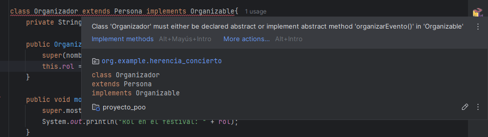
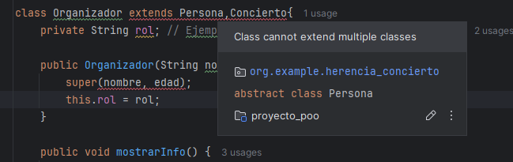

Si las clases abstractas se comportaban como un "molde", las interfaces van un poco más allá: son un "contrato" que las clases que implementen una interfaz deben cumplir. O dicho de otra forma, una interfaz se implementa en una clase para que esta sepa qué tiene que hacer, pero no el cómo.
Para crear una interfaz, si seguimos con el ejemplo del Festival, escribiremos una interfaz con el siguiente formato:
//interfaz para quienes organizan el evento
public interface Organizable {
void organizarEvento();
}FÍJATE:
- Los métodos son implícitamente públicos y abstractos SIN INDICARLO.
- No puede tener constructores, ya que no se pueden instanciar directamente. En cuanto a los atributos o variables, sólo podría tener constantes estáticas y finales (public static final).
La forma de implementar una interfaz es usando la palabra reservada implements, de la siguiente manera:

Igual que nos pasaba con los métodos abstractos, nada más indicar en la clase que queremos usar la interfaz nos mostrará el ERROR y nos obligará a implementar los métodos que dice el "contrato", es decir, los métodos que tenga la interfaz.
class Organizador extends Persona implements Organizable {
private String rol; // Ejemplo: "Seguridad", "Producción", "Prensa"
public Organizador(String nombre, int edad, String rol) {
super(nombre, edad);
this.rol = rol;
}
public void mostrarInfo() {
super.mostrarInfo();
System.out.println("Rol en el festival: " + rol);
}
public void accederEvento(){
System.out.println("Accediendo como Organizador: Coordinando el evento.");
}
public void organizarEvento() {
System.out.println("Organizando...");
}
}Herencia múltiple
Como ves, la clase Organizador hasta ahora tiene dos referencias: por un lado, hereda las propiedades de una clase abstracta como lo es Persona, y por otra, implementa los métodos de la interfaz Organizable que acabamos de crear. Este es uno de los principales usos de las interfaces: permitir la "herencia" múltiple, porque como ya te habrás dado cuenta, no se permite heredar (o "extender") clases hijas de varias superclases:

pero en cambio, sí podemos implementar varias interfaces. Por ejemplo, si creamos otra interfaz llamada Promocionable como la siguiente:
public interface Promocionable {
void promocionar();
}
Podríamos implementarla también desde la clase Organizador de la siguiente manera:
class Organizador extends Persona implements Organizable, Promocionable {
private String rol; // Ejemplo: "Seguridad", "Producción", "Prensa"
public Organizador(String nombre, int edad, String rol) {
super(nombre, edad);
this.rol = rol;
}
public void mostrarInfo() {
super.mostrarInfo();
System.out.println("Rol en el festival: " + rol);
}
public void accederEvento(){
System.out.println("Accediendo como Organizador: Coordinando el evento.");
}
public void organizarEvento() {
System.out.println("Organizando...");
}
public void promocionar() {
System.out.println("Promocionando...");
}
}| Clases abstractas | Interfaces |
| Se usa para compartir comportamiento común entre clases relacionadas. | Se usa para definir un "contrato" que múltiples clases deben cumplir. |
| Puede tener métodos abstractos (sin cuerpo) y métodos tradicionales (con cuerpo). | Desde Java 8 puede tener métodos abstractos, métodos default (con cuerpo) y métodos estáticos, aunque será raro que los lleguemos a implementar. |
| Puede tener atributos | Sólo puede tener constantes estáticas y finales (public static final). |
| Puede tener constructores, aunque no se pueden instanciar directamente. | No puede tener constructores. |
| Una clase sólo puede extender una clase abstracta (herencia simple). | Una clase puede implementar múltiples interfaces (herencia múltiple). |
| Los métodos pueden tener cualquier modificador de acceso (public, protected, private). | Los métodos son implícitamente públicos (aunque desde Java 9 se permiten métodos privados para ayuda interna). |
¿Cuándo usar cuál?
- Usaremos clase abstractas si hay una relación fuerte entre clases y se comparten atributos y código común. Ejemplo: Animal → Perro, Gato.
- Usaremos interfaces cuando necesitemos implementar herencia múltiple y definir comportamientos que pueden aplicarse a clases no relacionadas. Ejemplo: Volador → Pájaro, Avión, Superhéroe.